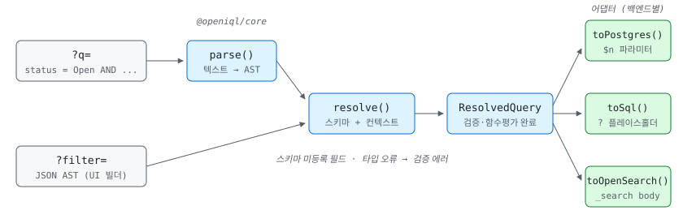
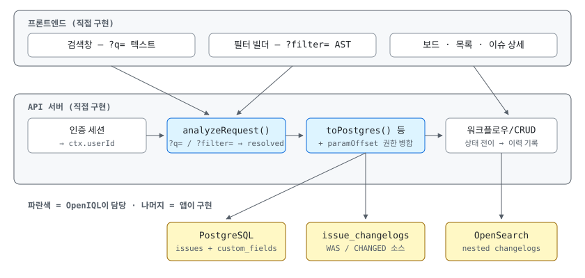

Jira 스타일 검색 기능을 우리 서비스에 붙이는 방법
v0.1.0 · Apache-2.0
사용자의 쿼리 문자열을 검증된 AST로 파싱하고, 각 백엔드의 파라미터화된 실행 쿼리로 변환합니다.

npm install @openiql/core # 필수 (런타임 무의존성) npm install @openiql/adapter-postgres # PostgreSQL npm install @openiql/adapter-sql # SQLite / MySQL / ANSI npm install @openiql/adapter-opensearch # OpenSearch
@openiql/core는 브라우저 번들에 넣어도 됨 — 프론트의 print()/parse() 재사용 가능
const schema = createSchema({
fields: {
project: { type: 'STRING', column: 'project_key' },
status: { type: 'STRING' },
assignee: { type: 'STRING', column: 'assignee_id' },
created: { type: 'DATE', column: 'created_at' },
points: { type: 'NUMBER' },
resolved: { type: 'BOOLEAN' },
},
customFields: { story_points: { type: 'NUMBER' } }, // cf.story_points
});
~는 STRING만, < >는 NUMBER·DATE만 허용| 구문 | 예시 |
|---|---|
= != (NULL 포함) | status = Open |
> >= < <= | points >= 3 |
~ !~ 부분문자열 | summary ~ login |
IN / NOT IN | status IN (Open, Done) |
IS EMPTY | assignee IS EMPTY |
| 구문 | 예시 |
|---|---|
WAS 이력 | status WAS "In Progress" |
CHANGED | CHANGED TO Done |
| 논리 | AND OR NOT ( ) |
| 정렬 | ORDER BY created DESC |
| 함수 | currentUser() startOfDay(-7d) |
키워드는 대소문자 무관 · 예약어·공백 포함 값은 따옴표 필수
// GET /issues?q=project+=+PROJ+AND+assignee+=+currentUser()
const { resolved } = analyze(q, schema, {
context: { userId: req.user.id, now: new Date() },
});
const { sql, params } = toPostgres(resolved, { tieBreaker: 'id' });
const { rows } = await client.query(sql, params);
ctx.userId → currentUser() 치환, ctx.now → 시간 함수 기준 (UTC)// analyzeRequest() 가 두 입력을 한 곳으로 받는다
analyzeRequest(
{ q: req.query.q, filter: req.query.filter },
schema, { context }
);
| 요청 | 동작 |
|---|---|
?q=status = Open | 텍스트 파싱 → resolve |
?filter={...} | JSON AST → 스키마 재검증 → resolve |
| 둘 다 지정 | ValidationError |
| 둘 다 없음 | 전체 검색 (match-all) |
에러는 e.toJSON() — {error, message, location} 그대로 400 응답 가능
OpenIQL은 "누가 볼 수 있는가"를 모릅니다. 앱이 WHERE에 권한 조건을 붙입니다:
const { where, orderBy, params } = toPostgres(resolved, { paramOffset: 1 });
const sql = `SELECT * FROM issues
WHERE project_key = ANY($1)${where ? ` AND (${where})` : ''} ${orderBy}`;
await client.query(sql, [allowedProjects, ...params]);
앱 파라미터가 $1을 먼저 쓰고, OpenIQL 파라미터는 $2부터 이어짐
CREATE TABLE issue_changelogs ( issue_id int REFERENCES issues(id), field text NOT NULL, from_value text, to_value text, changed_at timestamptz DEFAULT now() );
keyword 서브필드changelogs는 nested 타입custom_fields는 object전체 매핑: tests/opensearch.integration.test.ts 의 MAPPING
중요: 상태 전이 시 앱이 이력을 기록해야 합니다 — 기록 없으면 WAS/CHANGED는 빈 결과
| 어댑터 | 출력 | 이럴 때 |
|---|---|---|
toPostgres | $n 바인딩 SQL | PostgreSQL이 주 DB |
toSql | ? 플레이스홀더 | SQLite·MySQL·범용 SQL (ansi) |
toOpenSearch | _search body | 전문검색·대용량 인덱스 |
YYYY-MM-DD HH:MM:SS 자동 변환 · ansi 방언은 커스텀 필드 미지원?filter=는 파서 AST와 같은 JSON 구조 — UI가 객체를 만들어 보내면 됩니다.
{ "where": { "type": "Comparison", "field": "status",
"operator": "=", "value": { "kind": "string", "value": "Open" } },
"orderBy": [{ "field": "created", "direction": "DESC" }] }
print(ast) → 텍스트 쿼리로 변환해 검색창에 표시 (왕복 보장)?filter=로 재사용
파란색 = OpenIQL 담당 · 나머지(인증·워크플로우·이력 기록·UI) = 앱이 구현
1. 스키마 정의 (필드 화이트리스트) 2. 어댑터 선택 + 옵션 설정 3. GET /issues?q= 엔드포인트 4. 인증 → ctx.userId 연결 5. 권한 WHERE 병합 (paramOffset) 6. changelogs 기록 (워크플로우 훅) 7. 필터 빌더 → ?filter= 8. tieBreaker + 페이지네이션
PostgreSQL 16 · MariaDB 11 · OpenSearch 2 · node:sqlite — 실DB 통합 테스트 136개
docs/MANUAL.md — 사용 매뉴얼 (FAQ 포함)
docs/API.md — 공개 API 레퍼런스
docs/ARCHITECTURE.md — 명세 · spec/grammar.ebnf — 문법
github.com/yundo-main/openIQL